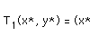
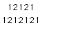
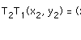
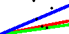
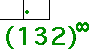
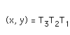
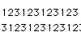
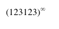

|
The simplest repeated sequence is constant, just
repeat the same number. |
|  |
Constant sequences generate sequences of points that converge to the
fixed point of the corresponding transformation. |
|
The next simplest repeated sequence is a 2-cycle, it
alternates between two values. |
|  |
Here we find the addresses of the 2-cycle points. |
|  |
Here we find the coordinates of the 2-cycle points. |
|  |
How do the limiting points depend on the
choice of initial point? |
|
Repeating a pattern of three transformations produces a 3-cycle. |
|  |
Here we find the addresses of the 3-cycle points. |
|  |
Here we find the coordinates of the 3-cycle points. |
|  |
What happens if we apply the 3-cycle transformations in a
different order? |
|  |
General cycles |